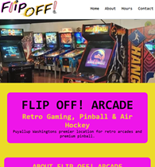
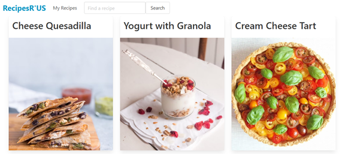

Projects
Website Redesign
A local arcades website redesigned to be dynamic. Enables website to be viewed on varying sizes of screens.
Technology
- HTML
- CSS
PokemonCollectr
A website to track your inventory of pokemon cards. Provides an interface to make adjustments to inventory quickly, search for missing cards, and displays current market values.
Technology
- JavaScript
- Json
- Node.js
Recipe App
A recipe app that allows the user to search a database for recipes. Recipes can be viewed, saved, and deleted from users profile.
Technology
- Axios
- Bulma
- JavaScript
- HTML
- CSS